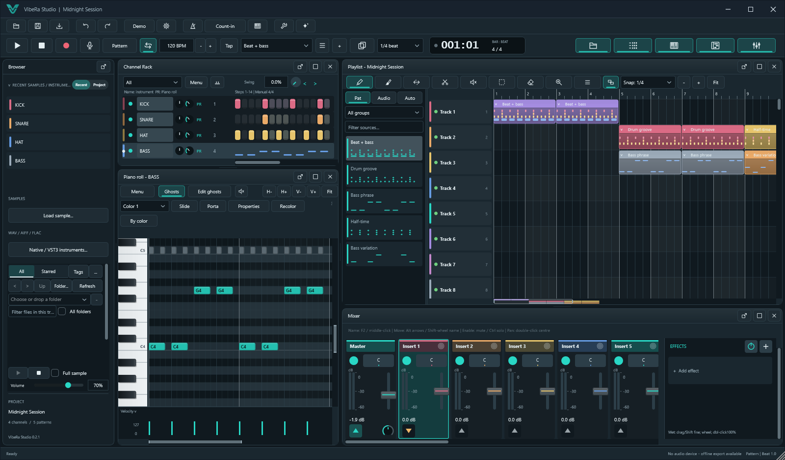
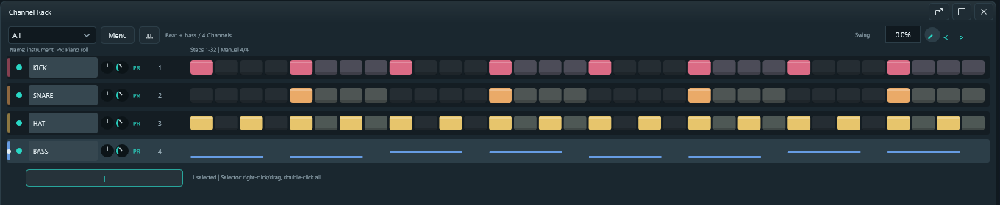
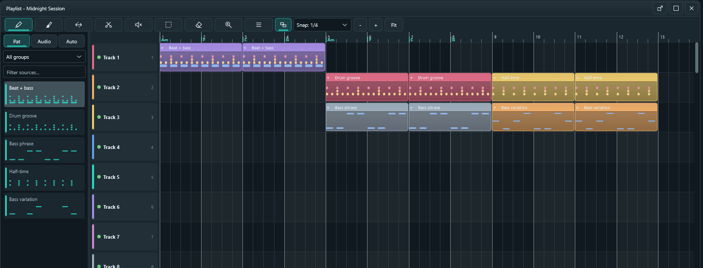
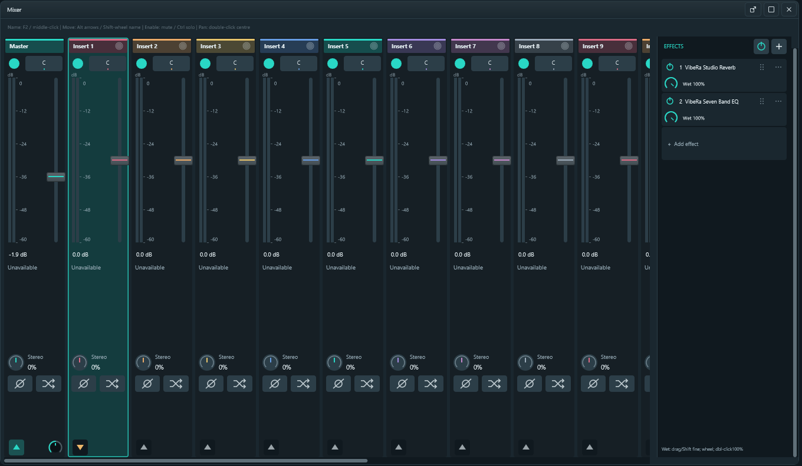
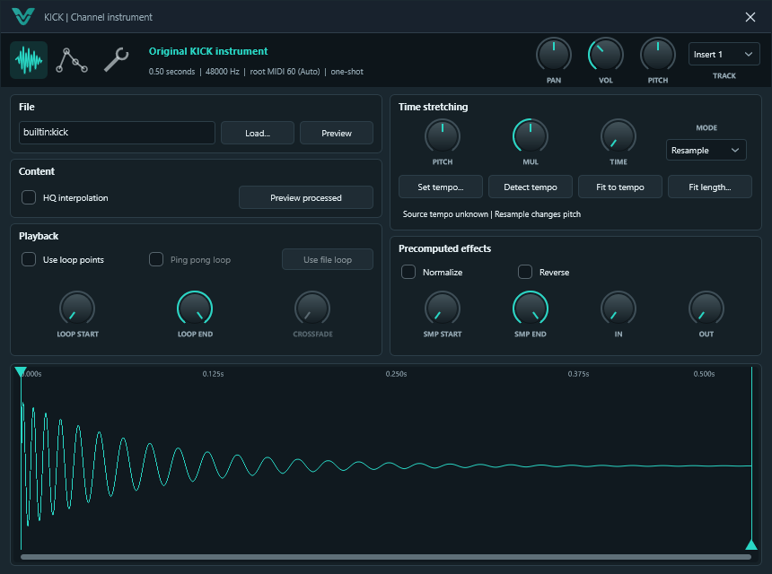
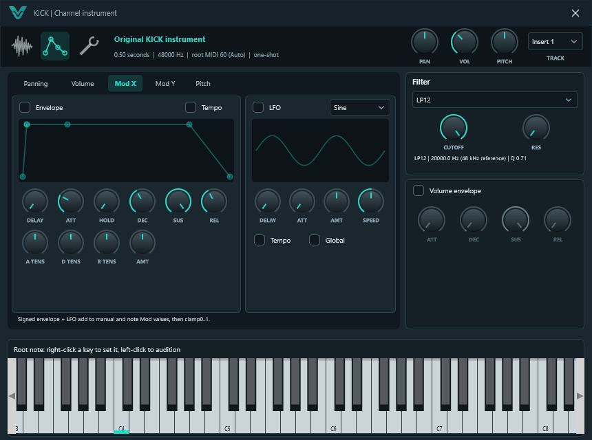
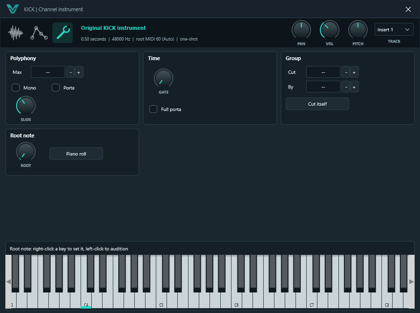
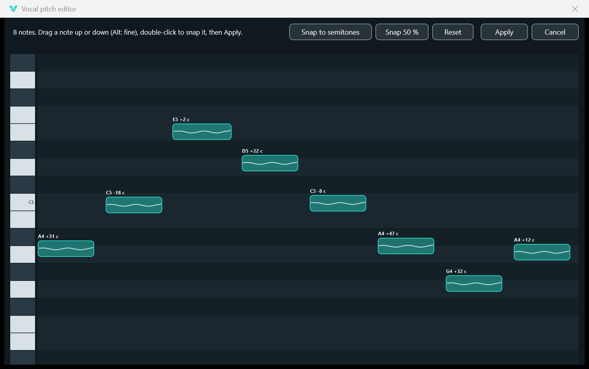
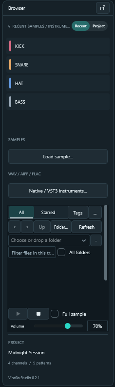

Everything the studio can do, how to do it, and the shortcuts that make it fast.
Every picture on this page is a real capture of VibeRa Studio running the bundled
Midnight Session example.
VibeRa Studio is a free, open-source digital audio workstation for Windows. You
build sounds as Channels, write them into Patterns, arrange Patterns and audio on the
Playlist, and shape everything in the Mixer, then export a finished track. No account,
no license key, no cost, under the GNU AGPL v3.0.
Channela sample, the Synth or a VST3 instrument
Patternsteps and notes for many Channels
PlaylistPattern, audio and automation clips in time
Mixerinserts, effects, sends, Master
ExportWAV, FLAC, OGG, MP3 or stems
40built-in effects
75+Synth presets
15maqam scales
2 minautosave interval
Key words you will meet
Channel
One sound source in the Channel Rack: a sample, the VibeRa Synth, the Drum Synth or a VST3 instrument. Each Channel sends its audio to a Mixer insert.
Pattern
A reusable block of steps and notes. One Pattern can hold parts for every Channel, and every copy on the Playlist plays the same Pattern, so editing it once updates every placement.
Pattern / Song mode
Press L to switch. Pattern mode loops the selected Pattern; Song mode plays the Playlist.
Insert
A Mixer track. Inserts hold up to a chain of effects, route to Master or to other inserts, and can sidechain each other.
Clip
Anything placed on the Playlist: a Pattern clip, an audio clip or an automation clip.
Snap
The grid that edits lock to: bars, beats, steps, triplets, grid lines or markers.
02 Workspace tour
Hover or tap the numbered dots to learn each area of the default workspace.

Tip Choose a dot to begin the tour, or use the arrows.
Hack Every panel can float or dock: use the buttons at the top right of a panel to
detach, maximize or close it. Lost your layout? Tools > Restore docked workspace layout.
F5 Playlist, F6 Channel Rack, F7 Piano roll, F9 Mixer,
F8 plugins, F10 Settings.
03 Your first beat in six steps
1. Open the example or start fresh
VibeRa ships with Midnight Session in the Examples folder. Open it with
Ctrl+O to hear a finished arrangement, or press the Demo button.
For a clean page, start a new project, or use New from template.
2. Add your sounds
Drag samples from the Browser onto the Channel Rack, or press the + under the
Channels to add the VibeRa Synth, the Drum Synth or a VST3 instrument. A kick, a snare, a hat and
a bass is all you need.
3. Click in a groove
Left-click steps to turn them on, right-click to turn them off. Press Space to hear
the Pattern loop. Try a kick on every beat, a snare on 2 and 4 and hats in between.
4. Write a bassline
Select the bass Channel and press F7. Draw notes with the pencil (P),
resize their ends, delete with right-click. Ctrl+Q tidies the timing.
5. Arrange the song
Press L for Song mode and F5 for the Playlist. Paint the Pattern along
a track, make a second Pattern for the chorus with F4, and build intro, verse and drop.
6. Mix and export
Link each Channel to its own Mixer insert with Ctrl+L, balance the faders,
add an EQ and a reverb, put the Maximizer on Master, then export with Ctrl+R.
04 Channel Rack F6

Each row is a Channel: mute light, pan and volume knobs, its piano-roll marker, Mixer insert and steps.
How to
Program steps: left-click on, right-click off, drag to paint a row.
Swing: the Swing box at the top right shuffles every Channel in the Pattern.
Graph editorCtrl+K: edit velocity, pan and pitch per step.
Select Channels: click the name; right-drag a selector; double-click selects all.
Group notesShift+G so they move together; Alt+G ungroups.
Mute notesAlt+M, unmute Alt+Shift+M.
Event lane: switch it between Velocity, Release, Pan, Mod X, Mod Y and Fine pitch.
Insert / delete spaceCtrl+Ins / Ctrl+Del at the time selection.
Chord stamp: pick a chord shape and every note you draw becomes that chord.
Arpeggiate, strum, flam, randomize, limit, articulate, scale levels and an LFO tool for velocity or pitch curves.
Riff machine and Claw machine generate and thin out melodic ideas.
Note scripts: run JavaScript on the selected notes; Ctrl+Alt+Y runs the last one again.
Scale snapping and the scale guide, including maqam scales with quarter tones.
Export a score sheet as PDF, or use the MIDI clipboard.
Expression maps: Menu > Articulation > Edit expression map, e.g. Legato=C1; Staccato=C#1, then
choose an articulation for the selected notes. Its keyswitch is sent just before each note.
Shift+R selects random notes and Shift+O every other note: delete or lower them for instant variations.
Ctrl+Shift+V pastes notes copied as MIDI from another program.
Ctrl+Enter selects the time around the selected notes; Ctrl+←/→ moves that time selection.
Alt+B shades the black-key rows for easier reading.
Shift+1/2/3 are zoom presets, Shift+4 fits, Shift+5 zooms to the selection.
06 Playlist F5

The clip picker on the left, tracks, Pattern clips with mini previews, and the Chord Track symbols on the ruler.
How to
Place clips: choose a Pattern, audio or automation source in the picker (Alt+P), then draw (P) or paint (B).
Move clips between tracks with Shift+↑/↓, nudge with Shift+←/→.
Copy, cut, paste, duplicate: Ctrl+C/X/V/B.
Markers: Alt+T adds one at the playhead; markers can also be added every N bars.
Right-click a marker > Action to make it Start, Loop, Skip or Pause playback.
Automation Clips: right-click > Articulator tools to flip, normalize, smooth or scale a curve;
Merge selected Automation Clips joins them into one.
Tracks: drag the edge to resize, Alt+wheel zooms vertically, lock tracks, colour them, group them.
Tempo and meter: tempo curves and time-signature changes live on the ruler.
Multiple arrangements of the same Patterns in one project.
Hacks
On audio clips: 7/8 pitch down/up a semitone, 9 reverses.
Ctrl+Ins inserts and Ctrl+Del deletes the ruler-selected time across the whole song: perfect for adding a bar to a finished arrangement.
Ctrl+Shift+G merges similar Pattern clips everywhere; Ctrl+G merges the selected ones.
Shift+M switches to stretch mode, so dragging an audio clip's end time-stretches it.
Ctrl+Shift+B clones the selected track with its clips.
Render selected clips to one audio clip, or consolidate a whole track to audio to free CPU.
07 Mixer F9

Master and inserts on the left; the selected insert's effect chain on the right, each slot with a wet knob.
How to
Route a Channel: select it in the Channel Rack, select an insert, press Ctrl+L.
Add effects: Add effect in the chain panel, or the + button. Drag slots to reorder.
Sends and sidechain: route an insert into another, set the send level, or pick it as an effect's detector input.
RenameF2, moveAlt+←/→, solo Ctrl+click the enable light, centre pan double-click.
Built-in 3-band EQ on every track, plus track delay, polarity, stereo separation and swap L/R.
Save track state: store a whole insert (effects, EQ, fader, pan) and open it in another project.
Latency compensation keeps effects with lookahead perfectly aligned.
Hacks
Touch-record fader, pan and send moves into automation while the song plays.
Alt+L selects the Channels routed to the selected insert.
Alt+W shows the Meter-wave view, a scrolling picture of each track's level.
Alt+G groups inserts; dock tracks to the left, middle or right.
Render-arm tracks to bounce them to audio in one pass.
Smart disable switches off idle VibeRa effects automatically to save CPU.
08 40 built-in effects
Every VibeRa effect opens with a balanced, bright window and a live visual of what it controls.
Choose a category to filter.
Parallel chains (FX container)
Right-click an insert's effect area > Add parallel chains and pick 1 to 4. Each branch gets a copy of the
insert's sound and outputs where it does, so effects on a branch run in parallel with the dry signal: parallel
compression, a wet reverb chain or a distortion blend. Balance with the branch faders, mute a branch to bypass it.
Modulators (LFO)
Right-click a fader, pan, separation or send > Modulator (LFO), or press Modulator... in a plugin's
Controls window. Choose sine, triangle, saw, square or random, a rate from 1/16 note to 4 bars and a depth. The
control moves around the value you set, in time with the song, in playback and in exports.
Hack Put Pump on a bass insert for tempo-synced sidechain-style pumping
without routing a kick. Use Beat Gate on a pad for instant stutters and half-time, and finish the
Master with Maximizer and check the result with the Spectrum Analyzer.
09 Sampler channel window
Click a sample Channel's name to open its window: three pages, compact knobs, and a root-note keyboard.

Trim, loop points, fades, reverse and time stretching (pitch, multiply, time and mode) to fit the sample to the tempo.

Envelopes and LFOs for Panning, Volume, Mod X, Mod Y and Pitch, with tempo sync and a filter (LP, HP, BP) driven by Mod X and Mod Y.

Polyphony, glide, gate, cut groups and other channel settings.
Hack On the keyboard strip, right-click a key to set the root note and
left-click to audition. Drop a drum loop on a Channel and use automatic slicing to spread its hits
across new Channels.
10 Instruments
VibeRa Synth
An original instrument with more than 75 presets:
synthesized basses, leads and pads plus recorded pianos, strings, brass and guitars. Wavetable
oscillators with up to 16-voice unison.
Type wavetable in the preset search to list every wavetable preset.
VibeRa Drum Synth
A fully synthesized kit on eight pads: kick, snare,
clap, hats, toms and rim. No samples needed, every drum is shaped with knobs.
Layer it under a sampled kick for extra weight.
Drum pads
Tools > Drum pads opens a pad grid to play and load a
kit with the mouse, the computer keyboard or a MIDI controller.
Turn on step record to write what you play at a cursor.
10b Vocal pitch editor
Right-click an Audio Clip > Edit > Edit vocal pitch (notes).... VibeRa finds every sung note and
draws it as a block over the real pitch curve, with how many cents it is off.

Each note shows its name and cents; the line inside is the sung pitch with its vibrato.
Drag a note up or down in semitones; hold Alt for cents.
Double-click a note to put it in tune, or use Snap to semitones (or Snap 50 % for a natural result).
Apply renders the clip with the same length; one Undo brings back the original.
Hack Snap 50 % keeps the singer's character while fixing the worst notes. Works on one voice
or instrument at a time.
11 Recording
Audio
Choose inputs in Settings (F10), arm, then press R and Space.
Loop takes: each pass becomes a take; comp the best parts into one.
Punch-in with a ruler selection; record several inputs at once.
Count-inCtrl+P and metronomeCtrl+M.
MIDI
Overdub or replace: choose in Tools > MIDI recording replaces notes.
Step record: write played notes at a cursor; insert rests from the Tools menu.
Typing keyboardCtrl+T: play notes with your computer keys.
Automation recording: knob moves while recording become automation.
Hack Record knob moves inside a Pattern and they play wherever that Pattern is placed,
great for filter sweeps that repeat every chorus.
12 Performance mode
Tools > Performance mode turns Patterns into launch pads you can trigger from the mouse or a MIDI
controller. While the song plays, what you launch is written onto the Playlist, so a jam becomes an arrangement.
Launch quantum: start immediately, on the next beat or on the next bar (right-click a pad).
Scenes launch a whole row of Patterns together.
Follow actions: right-click a pad > Follow action. After 1, 2, 4 or 8 plays it moves to the
next, previous, first, last, a random or another random Pattern, plays again or stops.
Hack Set Another Pattern (random) on a few drum variations and let the
performance generate a never-repeating groove; it is written to the Playlist so you can keep the best take.
13 Chord Track
Write a song-wide chord progression that shows on the Playlist ruler, then let notes follow it.
Tools > Chord Track: write a chord progression, type for example Am | F | C | G (one chord per bar), choose the start bar.
Slash and extended chords work: Bb/D, Dm7, Cmaj7, G7.
Tools > Chord Track: selected notes / Channel follow the chords moves each note to the nearest chord tone at its song position, as one Undo step.
Hack Write one bassline over a single chord, place it under every bar, then make it
follow the Chord Track: the line re-harmonizes to the whole progression in one click. For a quick idea,
Tools > Create a chord progression writes chords into a Pattern.
14 Maqam & microtonal tuning
VibeRa speaks quarter tones. The Piano roll's scale guide marks every half-flat degree, snapping can follow a
maqam, and each Channel can be tuned with maqam presets or any Scala (.scl) file.
Maqams include Rast, Bayati, Saba, Sikah, Huzam, Hijaz, Nahawand, Kurd, Athar and Jiharkah.
The Tune effect corrects pitch to a maqam on any key.
Plugin instruments receive tuning through MPE or MTS-ESP.
Hack In a rendered test, Rast E measured exactly 50 cents flat: what you see in the
guide is what you hear.
15 VST3 plugins F8
Scan your VST3 folders from the plugin browser, then add instruments to the Channel Rack and effects to
Mixer inserts. Every plugin runs in a protected worker process: if a plugin crashes, VibeRa recovers it and
your session keeps going.
The plugin window header has ON, PAN, VOL, PITCH, RANGE and the Mixer TRACK.
Plugin parameters can be automated and linked to MIDI controllers.
Multi-output instruments can send each output to its own Mixer track.
16 Browser

Folders: add your sample folders, then go back Backspace, forward Shift+Backspace, up Alt+↑.
SearchCtrl+F, next result F3, previous Shift+F3.
Smart queries: * and ? wildcards, AND, OR, NOT, parentheses and "quoted text".
Tags and stars: tag files, filter by Any or All tags, keep favourites in the Starred tab.
Preview: short or full preview with its own volume.
Project view lists every sample, instrument and effect in the current project.
Right-click a file: send to the selected Channel, open in a new Channel, Show in folder, Move to Recycle Bin.
Hack Search kick NOT (loop OR fx) to find only one-shot kicks.
Save a search as a tab to keep it, and sort by date to find the samples you just downloaded.
17 Export & loudness
Ctrl+R: WAV, FLAC, OGG or MP3 at 44.1 or 48 kHz, 16, 24 or 32-bit.
Stems: one file per Mixer insert, or each Playlist track or track group.
Effect latency is lined up from the first sample, so stems line up in any other program.
MIDI export, and score sheets as PDF.
Loudness meter
After an export VibeRa reports integrated loudness (LUFS), loudness range and true peak to
the EBU R128 / BS.1770 method. Check any audio file with Tools > Analyze loudness of an audio file.
-14 LUFS
Hack Streaming services commonly normalize around -14 LUFS. Raise the Maximizer gain until
the report lands near that, keeping true peak below -1 dBTP.
18 Projects & safety
Never lose work
Autosave every two minutes, five rotating backups of every
save, and recovery after a crash. Tools > Open project backups folder goes straight to them.
Bring your projects
Open .flp project files and MIDI files, and
drag samples from the Browser or Explorer. Find missing samples relinks moved files.
Templates
Save as template keeps your favourite starting setup;
New from template opens it ready to go.
Hack Found a bug? Tools > Export diagnostics writes a report without your personal
paths; attach it to a GitHub issue.
19 AI & automation
VibeRa includes a Model Context Protocol (MCP) server, so an AI assistant can read the project and use the
same commands you use in the interface, with the same Undo and validation. A provider-neutral skill package
in the skills folder teaches assistants the workflows.
The CoProducer side panel (spark button in the toolbar) is an early producer chat and MIDI-idea panel.
It is experimental and still growing.
20 Keyboard shortcuts
The defaults below are editable in Settings. Type to filter.
21 Producer hacks
Hack of the moment
22 FAQ
Is it really free?
Yes. VibeRa Studio is free software under the GNU AGPL v3.0. No account, license key or subscription.
Which systems are supported?
Windows 10 and 11, 64-bit. Linux and macOS builds are produced automatically but are not tested yet.
I hear nothing.
Open Settings with F10 and choose an audio device. The status bar shows the active device. Check that the Channel is linked to an insert that routes to Master and is not muted.
A plugin crashed. Did I lose my session?
No. Plugins run in a protected process and VibeRa recovers them. Autosave and backups protect the project too.
Can I use my FL Studio projects?
VibeRa opens .flp files and imports their Patterns, Channels and arrangement as far as the format allows. VibeRa is an independent project and not affiliated with Image-Line.
How do I report a problem?
Use Tools > Export diagnostics and open an issue on GitHub.
Nothing in the manual matches that search. Try a shorter word.